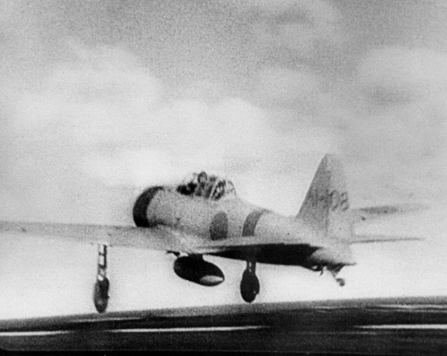

(Crotty)The Mitsubishi A6m "Zero" fighter plane was the most capable carrier-based fighter in the world when it was first produced, in 1937. The use of this plane gave Japan a powerful edge early on in the war, its air force gaining a reputation as excellent dogfighters, and the plane itself having an average kill ratio at the beginning of its usage of 12:1. This particular photo is of a Zero leaving an aircraft carrier to be part of the attack on Pearl Harbor. The ability to invent and mass produce this peice of technology was only possible because of Japan's industrialization.